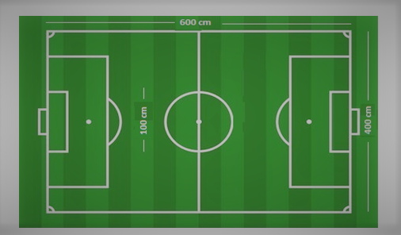

Robo KICk
Description:
Its Soccer time….
Everyone plays soccer, of course each of them have their own bizarre way. The knack of fusing technology with sports seems to be an inherent quality among the technocrats, and to celebrate this very spirit, we hail this event known as ROBOKICK. It’s the action time, ball is here, field is here, and opponents are ready to take on. This is the perfect time to show your soccer passion now.
Team Size:
• Each team consist of maximum 5 members.
• The event is open for all colleges and members from different colleges may also form their team.
Game Rules:
• Every team must have fascinating & unique team name and a team leader only who can directly talk to the organising members.
• Each team consist of 4 bots including 1 goalkeeper.
• Goalkeeper must be within D in front of goal for the entire match.
• The duration of one match will be of 16 minutes (Half of 8 minutes each).
• The winner team will be decided based on number of goals in the time limit.
• If a team throws the ball outside the boundary of the arena then the ball will be passed to the nearby opponent player.
• The initiation of the game will be done by toss. The toss winning team will kick the ball first.
• In case of any malfunctioning in the robot during the match, once the members can fix their robots within the limited time.
• In case of tie, 5 penalty shots by each team will be taken.
Bot Specifications:
• The dimension of bots must not exceed 30cm*30cm*30cm and the weight of bot must not exceed 6 Kgs.
• Bots may be wired or wireless.
• In case of wireless bots, team should be prepared for frequencies interference with opponent team.
• The robots are not allowed to use grippers or actuations or something else, which are intended to harm the opponent’s robot.
• teams aren't allowed to hold the ball within any kind of grip.
Arena:

Disclaimer:
• In case of any discrepancy, the decision of the coordinators will be final.
• Necessary, immediate, unbiased, slight changes in rules may be done by organizing on the spot in order to run the event smoothly.
• Prize may be reduced if number of participating team is less than 5 and event may be cancelled if participating team is less than 2.